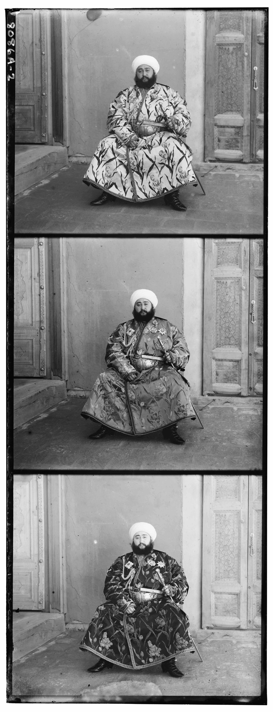
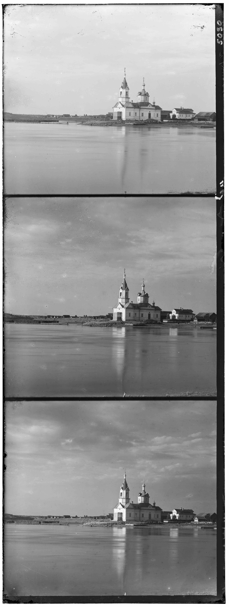
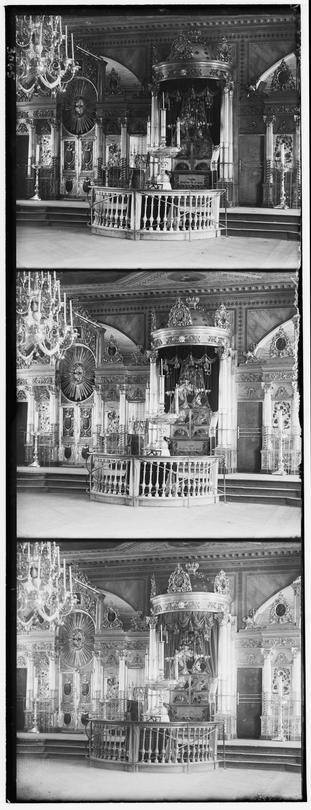
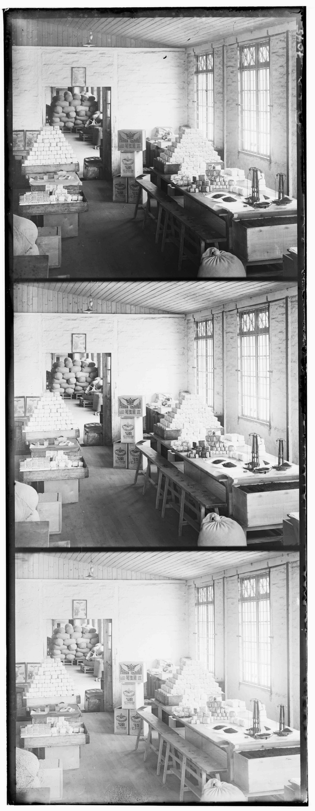
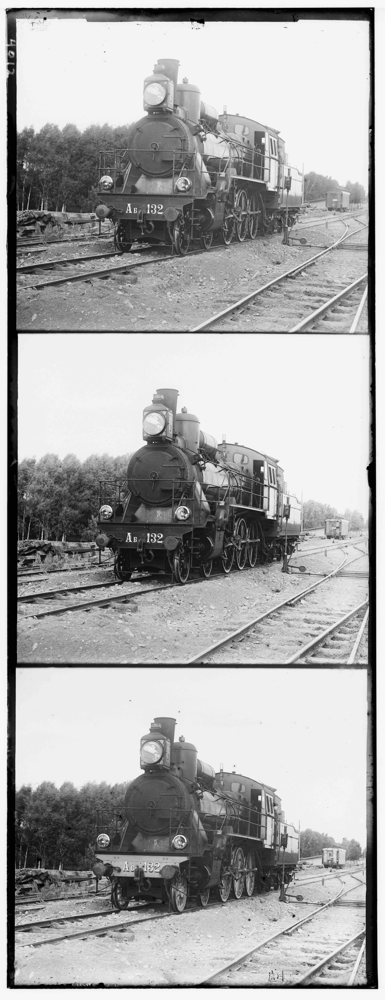
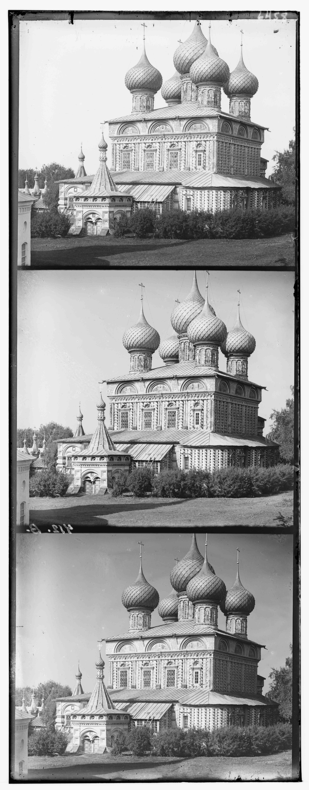
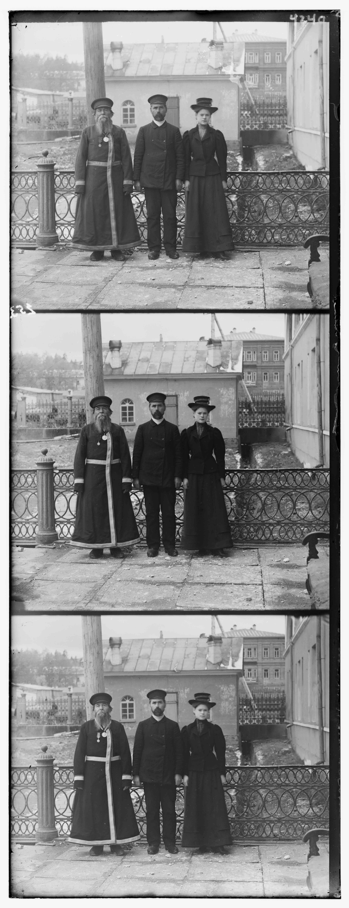

Overview
The goal of this project is to colorize the glass plate images from the
Prokudin-Gorskii collection, a library of RGB glass plate negatives
collected by Sergei Mikhailovich Prokudin-Gorskii. Sergei was a pioneer
of color photography well before color printing was even available, and he
traveled across Russia taking pictures of the country. During this time, he envisioned a
future of color photography where projectors would be able to display
these images across classrooms in Russia and Russian children could learn about their
vast country. All of the glass plate negatives that he generated are now
digitized in the Library of Congress. This project takes a selection of
RGB negatives from the collection and attempts to colorize them by aligning the
three glass plates provided for each image to form one colorized image depicting
the scene Sergei captured on his camera hundreds of years ago.
Approach
Low-Resolution Images:
To align the RGB color channels in the simple low-resolution case, I calculated the L2 norm between
each pair of color channels, searching over a displacement shift of 15 pixels in each direction (top,
left, right, and bottom) to find the alignment that resulted in the smallest L2 norm. Since the L2
norm calculates the difference between two input arrays, having a smaller L2 norm means that the
color intensities of each channel matches up most closely. For all images I tried, the L2 norm worked
well for ensuring proper alignment of borders and edges across the different color channels.
Hover over images to view alignment offsets.
High-Resolution Images:
For high-resolution images, alignment offsets required searching over more than just 15 pixels of
displacement in each direction and additionally, calculating one instance of L2 norm took much longer.
As a result, I implemented a 5-level pyramid search scheme where I started with a downsized image that was 1/16th
of the original resolution and continuously increased the resolution by a multiple of 2 until I reached
the original high-def image. I noticed that running an exhaustive displacement search at each level over a 15-pixel
displacement range in each direction still took quite a few minutes, with the runtime severly bottlenecked at
the lower layers (more high-def images). As a result, since the alignment was pretty much close to where it should
have been after the top few layers, I used a modified displacement search heuristic to improve the runtime so that
all images could be generated in under 30 seconds. This heuristic involved searching over a displacement size of
15 at level 1/16th resolution, 12 at level 1/8th resolution, 9 at level 1/4th resolution, 4 at level 1/2 resolution,
and 2 at level 1 resolution. This modified heuristic improved the runtime drastically but there were some images that
had marginally lower alignment quality. On the whole, almost all images performed decently well but some of the high-resolution
images had a slightly misaligned green channel. This is probably due to the fact that I had aligned the green and red
channels first before attempting to align both onto the blue channel. For the most part, implementing auto-cropping of the
borders fixed most alignment issues, but I'll talk a bit more about that in the Bells & Whistles section.
Hover over images to view alignment offsets.
Bells & Whistles
For the extra image preprocessing, I implemented automatic cropping of the borders. To do so, I did two separate steps of
cropping: 1) crop the noticeable white/black edges from each of the three color channels before aligning and 2) finetune the
cropping of the final colored image. Step 1 worked very well in helping the color channel alignment better align to the edges
of the objects in the image rather than being skewed by aligning to the border edges. However, I noticed that even after step 1
cropping, the final colored image still retains some noticeable borders especially when there are colored lines due to slight alignment
shifts along the edges of the color channel. To remedy this, step 2 goes through the final colored image and performs cropping if
the border is very close to white or black and if the entire edge is approximately the same color according to my heuristic.
The heuristic I used for determining whether or not to crop an edge was finalized after a couple experiments and testing. I found that
the best results occurred when I cropped according to the following rules for each part:
Part 1 (done for each color channel):
- Crop white edges if at least 40% of pixels in that row or column are within 0.05 of 1 (where 1 is no color in that pixel).
- Crop black edges if at least 40% of pixels in that row or column are within 0.2 of 0 (where 0 is full color in that pixel).
Part 2 (done for the final colored image):
- Crop white edges if the mean along each color channel of that row or column is within 0.05 of 1 (where 1 is white in that pixel).
- Crop black edges if the mean along each color channel of that row or column is within 0.2 of 0 (where 0 is black in that pixel).
- Crop the edge if at least 60% of values along the edge are within 0.15 of the mean for its corresponding color channel. (This checks for
consistent bands of solid color that occurs along the edges sometimes due to edge alignment errors caused by boundary inaccuracies in the
original input image).
Hover over images to view the before copy of the image without cropping.
Looking at the auto-cropping results, we can see that for the most part, the cropping was noticeably succesful. Cropping was particularly good at removing
the extra whitespace around the edges since those were all pretty much exactly white. Most of the black-edged borders were successfully cropped out except
for certain cases like the right edge of church.tif, the left edge of emir.tif, the left edge of icon.tif, the left edge of melons.tif, the right edge of
three_generations.tif, and the borders of workshop.tif. In all of these cases, the black edging was not exactly black and displayed splotches or lines of
other colors which made it difficult for my heuristic to detect a solid black which represented the borders.
But for the most part, autocropping was successful and in some cases even managed to detect solid color edges and remove them. This can be seen in tobolsk.jpg,
monastery.jpg, onion_church.tif, the top and bottom of three_generations.tif, the bottom of icons.tif, and the bottom and right of emir.tif, among others.
Extra Images
Here is a display of extra images I selected from the Prokudin-Gorskii collection.
Hover over images to see what their title is from the Prokudin-Gorskii collection.